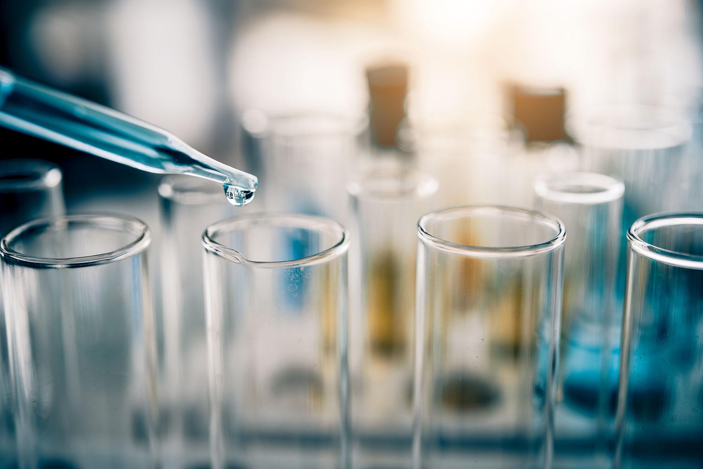
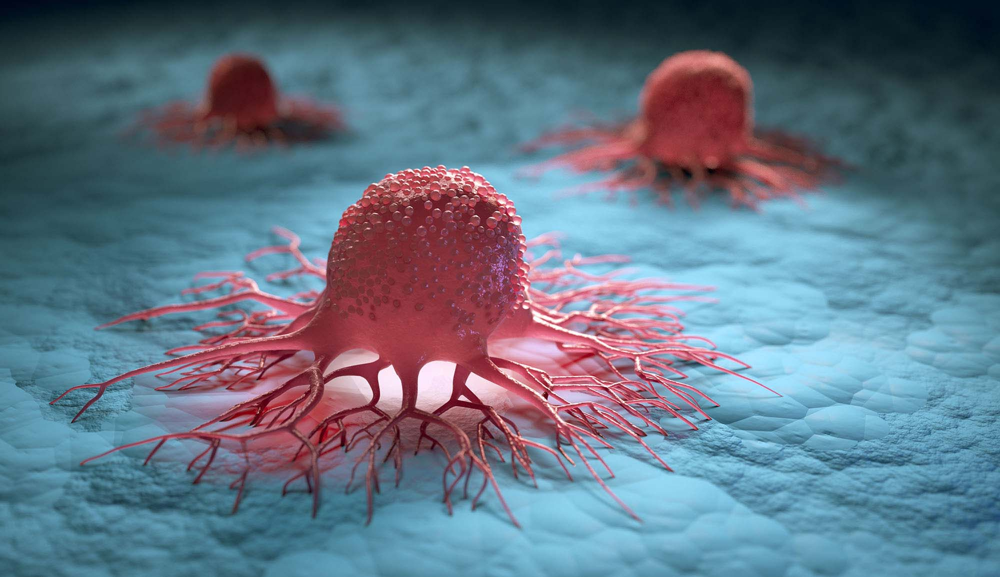

Biology & Medicine
From micro-organisms to the human body, major breakthroughs in biology are offering us unique insights into the great wonders of the tiny world. For many people their life expectancy is much longer and their quality of life much improved, thanks to the growth of our understanding of medicine. Over a series of exhibits we explore the history of medicine and take a look at some major breakthroughs including the discovery of penicillin and the first heart transplant. Many of our great medicinal discoveries have come not only from the lab, but also from observing animals in the wild. Often our fellow creatures have beat us to it.
 From micro-organisms to the human body, major breakthroughs in biology are offering us unique insights into the great wonders of the tiny world. For many people their life expectancy is much longer and their quality of life much improved, thanks to the growth of our understanding of medicine. Over a series of exhibits we explore the history of medicine and take a look at some major breakthroughs including the discovery of penicillin and the first heart transplant. Many of our great medicinal discoveries have come not only from the lab, but also from observing animals in the wild. Often our fellow creatures have beat us to it.
Biology is the study of living things. A biologist is a scientist who studies biology. Biologists try to understand the natural world and the things that live in it. These things include plants, animals, fungi, protozoa, algae, bacteria, and viruses. The study of biology covers many areas. It is usually divided into separate branches, or fields. Some biologists study anatomy, or the structure of living things. Some study physiology, or how the different parts of a body work together. Still others study ecology, or how organisms interact with their environment. There are many other branches as well.